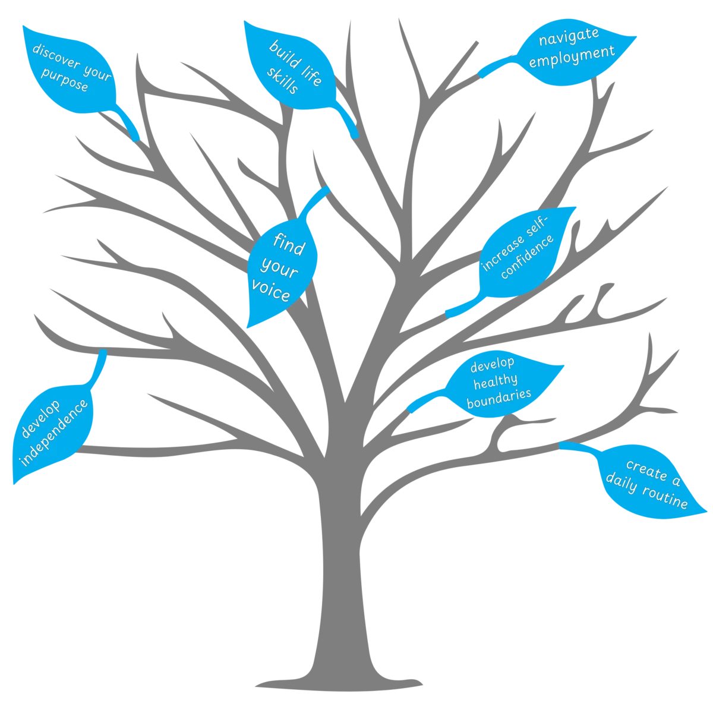
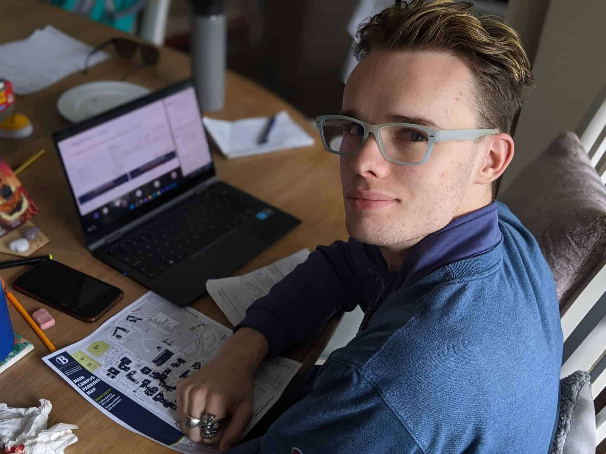

Discover Real-Life Executive Function Coaching
Are you or someone you care about feeling overwhelmed by executive functioning challenges like organizing tasks, managing time, or maintaining focus in school, work, or everyday life? Do these difficulties make daily activities and planning for the future feel more complex? Are they also taking a toll on your physical and emotional health? You're not alone, and there's a solution to help you overcome these obstacles while embracing your unique identity.
Introducing Real-Life Executive Function Coaching, a game-changing individualized coaching program for neurodivergent teens and adults. Our compassionate & person-centered approach empowers you or your child to improve executive functioning skills across school, work, and everyday life, leading to increased autonomy, self-confidence, and overall well-being.
Navigate your neurodiversity with greater confidence—Book a Complimentary Discovery Meeting today!

“I feel more capable and less intimidated by everyday life.”
Charlie
Coaching with LSA gave me the confidence I needed to manage tasks I used to find overwhelming. I feel more capable and less intimidated by everyday life. It has been transformative in ways I didn’t expect, and it’s given me peace of mind.

Who We Work With...
Whether you're a high school student, college student, professional, or somewhere in between, our personalized approach focuses on your unique needs and aspirations, starting at age 14.
Across THESE Key Areas
Life is interconnected, and challenges in one area—like school—can often spill over into others, such as home or work. At Life Skills Advocate, we understand that your needs aren't confined to just one domain. Our coaching approach considers the whole picture, providing support across various aspects of life. Whether you're seeking help with a specific area or navigating multiple challenges at once, we're here to guide you through it all.
How Coaching With LSA Can Help

How Coaching With LSA Supports High School Students & Families
High school is challenging, especially for neurodivergent students who may struggle with organization, time management, motivation & self-confidence. These challenges often lead to missed assignments, increased stress, and a decline in self-esteem.
As a result of coaching, our high school students and families most commonly feel more empowered to:
- Organize schoolwork and plan ahead, reducing missed assignments and last-minute stress.
- Find motivation and engagement, overcoming feelings of disinterest or burnout.
- Manage time effectively, balancing academics, extracurriculars, and personal time.
- Build resilience and manage emotions, handling stress and setbacks with greater ease.
- Improve attention and focus, staying on task and avoiding distractions.
- Make thoughtful decisions, enhancing problem-solving skills and self-determination.
- Develop self-advocacy skills, confidently expressing needs and seeking support.
- Build self-esteem and self-confidence, counteracting feelings of inadequacy.
- Adapt to changing environments, adjusting to new challenges with flexibility and confidence.
“We no longer need to hover over his shoulder to ensure he stays on track.”
Lisa – parent
Our son was constantly overwhelmed by school, and we felt like we had to constantly monitor him. After coaching, he's much better at organizing his time and getting things done on his own. We no longer need to hover over his shoulder to ensure he stays on track.

How Coaching With LSA Supports College Students & Families
The transition to college can be overwhelming, especially for neurodivergent students who suddenly find themselves without the structure and support they had in high school. Balancing academic demands, social pressures, and newfound independence can lead to missed assignments, increased stress, and a decline in self-confidence and well-being.
As a result of coaching, our college students and families most commonly feel more empowered to:
- Improve time management, reducing stress and enhancing academic performance.
- Recognize and address burnout early, preventing it from affecting studies and well-being.
- Ease the transition to college life by building routines and strategies for success.
- Build a positive relationship with school, increasing engagement and motivation.
- Balance academic and social life, promoting overall well-being and satisfaction.
- Find motivation and maintain engagement in academic pursuits.
- Develop lifelong independence, preparing for life beyond college.
- Create boundaries around distractions, improving focus and productivity.
- Strengthen self-advocacy skills, ensuring needs are met in various settings.
“…I finally feel like I have a plan and tools that work for me.”
Tyler – College Student
Coaching has helped me so much this semester. I used to feel really lost about how to approach big assignments and exams, but now I finally feel like I have a plan and tools that work for me. I'm more productive, and I feel less anxious about deadlines.

How Coaching With LSA Supports Young Adults & Families
Navigating the transition into adulthood can be especially challenging for neurodivergent young adults who are still finding their way. Many feel stuck, unsure of how to build the life they want. It's easy to become overwhelmed by the demands of living independently, finding purpose-driven employment, and making meaningful social connections, leaving both young adults and their families feeling frustrated and unsure of the future.
As a result of coaching, our young adults and families most commonly feel more empowered to:
- Create a clear path to independence, gaining clarity and direction for the future.
- Build essential life skills, ensuring readiness for daily challenges.
- Strengthen executive functioning, improving organization, planning, and follow-through.
- Increase self-confidence and resilience, fostering a stronger sense of self.
- Create connection with others, enhancing social interactions and relationships.
- Ease dependency on family, cultivating self-reliance.
- Navigate employment challenges, achieving career goals.
- Overcome distractions and manage time, maintaining focus and productivity.
- Build self-advocacy and decision-making skills, empowering informed choices.
“Now, I’m aware of my needs and have options to manage them.”
Maya – young adult
Thanks for helping me with all the things I've struggled with my entire life! Now, I'm aware of my needs and have options to manage them. The coaching gave me tools to advocate for myself and stop following what others expect. It's been empowering to cater to myself.

How Coaching With LSA Supports Adults
Balancing adult life can feel overwhelming, especially for neurodivergent individuals who often struggle to stay connected to their goals. Many adults feel stuck, trying to manage work, relationships, and day-to-day responsibilities, which often leads to burnout, frustration, and uncertainty about the future.
As a result of coaching, our adult clients most commonly feel more empowered to:
- Manage burnout and overwhelm by establishing boundaries and prioritizing self-care.
- Embrace their neurodivergent strengths, turning challenges into assets.
- Rebuild confidence at work by enhancing communication and exploring accommodations.
- Strengthen personal relationships, acknowledging that while coaching is therapeutic, it is not therapy.
- Navigate career transitions with clarity, reducing anxiety and self-doubt.
- Break the cycle of self-criticism, focusing on growth and self-compassion.
- Manage procrastination and perfectionism by setting realistic goals.
- Balance competing priorities to reduce stress and increase productivity.
- Rebuild self-trust, gaining confidence in decision-making and follow-through.
“I’ve seen progress in my self-awareness and compassion.”
Jade
Coaching has made a huge difference for me. I've seen progress in my self-awareness and compassion toward myself, especially in situations that are beyond my control. The support has been validating, and I feel more equipped to manage my challenges.
While not all of our clients have ADHD or are autistic, we support many who are. We specialize in addressing executive function challenges that are common for neurodivergent individuals.


Meet The Coaches!
Each with a shared lived experience with neurodivergence and seasoned professional expertise, providing you with empathetic understanding and practical strategies from the very first meeting.
Take The First Step


“I feel seen and understood in ways I didn’t expect.”
Jordan – Young Adult
It's really nice to be able to talk with someone who understands and accepts me for who I am. I feel seen and understood in ways I didn't expect. I didn't feel like I was talking to a superior.
What Can You Expect From Your Coach?
With every client and family we serve, our coaches strive to help them…
Feel Truly Seen & Understood
Our coaches strive to create a coaching relationship built on trust, empathy, and genuine care for our clients' well-being. They listen to and understand not only the challenges our clients face but also those of their entire family.
Build a Personalized Toolkit
Our coaches strive to provide a personalized set of strategies and tools tailored to help manage executive functioning challenges more effectively. Whether it's organization, time management, emotional regulation, or another area of focus, these tools are designed to address specific needs.
Make Progress Toward Goals
Our coaches strive to help our clients see meaningful progress toward at least one of the goals set at the beginning of coaching. The coaching process is goal-oriented, ensuring that progress is made in a way that aligns with their unique objectives and aspirations.
Increase Self-Advocacy Skills
Our coaches strive to equip our clients with the skills to better advocate for their own needs in both academic and personal settings. Whether it's navigating school, work, or social interactions, they will work towards greater confidence and skills needed to express their needs and seek support when necessary.
Deepen Self-Awareness
Our coaches strive to help our clients gain a deeper understanding of their own needs, how their brain works, and how to navigate the world in a way that respects their neurodivergence. This includes exploring any internalized ableism and learning how to approach it from a place of self-compassion and resilience.
Why A Client-Centric Approach?
The short answer – because it works.
A person-centered approach recognizes the importance of understanding and connecting with each individual on a deeper level.
Research studies (Thomas, 2006) have identified "The Big Four" common factors that contribute to successful change:
- Relationship Factors (30%): Establishing a strong connection between the client and the coach.
- Hope & Expectations (15%): Fostering a sense of optimism and confidence in the process.
- Models & Techniques (15%): Utilizing evidence-based strategies tailored to the individual's needs.
- Extra-therapeutic Factors (40%): Considering the unique circumstances and resources in a person's life.
By focusing on these key elements, our person-centered approach ensures that our coaching is effective and genuinely resonates with the people we serve.
Thomas, M. L. (2006). The contributing factors of change in a therapeutic process. Contemporary Family Therapy, 28(2), 201–210. https://doi.org/10.1007/s10591-006-9000-4

“He's more confident and responsible.”
Amy – parent
Before coaching, our son struggled with organizing his schoolwork and keeping up with assignments. Now, he's more confident and responsible. He manages his schoolwork without us having to remind him constantly.
The LSA Coaching Session Framework
Our coaching sessions are flexible, yet structured to meet the unique needs of each client, while ensuring a consistent and effective framework:
- Check-in: Assess progress and setbacks, allowing time for reflection and discussion.
- Recap: Review the previous session and achievements to build a strong foundation for growth.
- Formulate: Prioritizing the session goals and activities based on the client's specific needs and overall coaching plan.
- Skill building: Practice and develop essential executive functioning skills with the guidance of the coach.
- Planning: Outline actionable steps and strategies for the upcoming week, fostering a sense of direction and purpose.
- Accountability: Provide regular check-ins throughout the week, offering support as needed.
This approach ensures our clients have ample time to process their experiences, collaborate with their coach, and actively apply the skills they are learning.

Frequently Asked Questions
What is executive function coaching?
Executive Function Coaching helps individuals improve their mental processes such as organization, time management, task initiation, attentional control, self-monitoring and others across real-life contexts such as school, work and daily life.
With coaching and compassionate accountability in tandem, clients can expect to achieve not only better performance in these areas, but also a better relationship with themselves and others, as well as a more in-depth understanding of how their brain and nervous system works.
At Life Skills Advocate, we also prioritize our clients' emotional regulation as it pertains to executive functioning and understand the emotional ripple effect it can have on overall quality of life.
Our coaches are trained to recognize the emotional impacts of executive dysfunction and use informed and evidence-based approaches and lived experience with neurodivergence to help clients manage their struggles.
Why choose Life Skills Advocate?
At Life Skills Advocate, we're more than just a coaching service. We're a team dedicated to empowering neurodivergent individuals through a personalized, client-focused approach. Here's what sets us apart:
- Shared Experience With Neurodivergence: Our coaches, including our founder, who has personal experience with ADHD, understand the challenges of neurodivergence firsthand.
- Client-Centric Relationships: We prioritize building strong, judgment-free relationships with our clients, understanding their unique needs and goals.
- Holistic: We take a holistic approach, considering the well-being of the entire family, when applicable. We work closely with families to support the client's development within their broader environment.
- We Go Beyond Executive Functioning: We specialize in supporting executive functioning skills while also addressing the social/emotional aspects of neurodivergence. Our coaching approach supports clients in navigating both practical and social/emotional challenges, helping them manage school, work, and life more effectively.
- Inclusive and Safe Environment: We provide a safe and inclusive space for LGBTQIA+ clients, understanding and respecting the unique intersection of neurodivergence and LGBTQIA+ issues. Our approach is tailored to support the whole person, recognizing the diverse challenges and experiences our clients may face.
- Gentle Accountability Support: We offer gentle, on-demand accountability support at no extra cost, keeping clients motivated and on track.
How does the coaching process work?
The first step in our coaching process is to schedule a complimentary 30-minute discovery meeting to discuss your or your child's specific needs and goals. If coaching seems like a good fit, we then arrange a foundation session to match you or your child with the right coach.
While our coaching program is not bound by a fixed duration, we recommend a minimum commitment of 12 weekly sessions to see meaningful change. However, the exact length of coaching varies based on individual goals and situations.
In the early sessions, we may use various assessment tools, including executive functioning assessments, readiness to change assessments, motivation scales, and "getting to know you" questionnaires. These assessments help us tailor the coaching experience to your or your child's unique needs.
Once paired with a coach, you or your child will participate in sessions customized to their needs. The process starts with setting clear goals and creating a coaching roadmap. Each session is designed to reflect on progress, address challenges, and practice strategies with your coach's guidance.
Depending on your situation, we may encourage parental or family involvement. This could include semi-regular meetings between you, your family, and the coach to ensure alignment throughout the process, adjust strategies based on input, and prepare everyone to support progress once coaching concludes.
Additionally, if needed, our coaches provide gentle accountability check-ins throughout the week to help you or your child stay on track and make progress in the desired areas.
What are the backgrounds of your coaches?
At Life Skills Advocate, our coaches bring a wealth of diverse experiences to their roles. Each coach has personal lived experience with neurodivergence, which allows them to connect deeply with the clients and families they work with.
Professionally, our coaches come from a range of coaching or coaching-adjacent fields, including special education, mental health counseling & social work, among others.
We also provide comprehensive internal training and regular professional development to ensure that our coaches are equipped with the latest tools and strategies to support our clients effectively.
Book Your Complimentary 30-Minute Coaching Discovery Meeting With Amy 👇

Who Is Coaching For?
What to Expect During the Discovery Meeting
Welcome 😃
Introduce yourself and learn how coaching with LSA may be able to help.
Goals 🎯
Discuss your goals and expectations to customize your coaching experience.
Overview 🔍
Discover more about our coaching process and how it can benefit you.
Next Steps ✔️
Get paired with the right coach & book a foundation session.